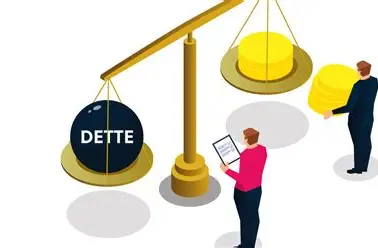
La dette publique des pays africains : entre justice et injustice intergénérationnelles
Le rôle de l'endettement dans le financement des infrastructures, et ce qu'il transmet aux générations futures.
Je suis S Christian OUEDRAOGO, économiste statisticien et chercheur en économie appliquée, étudiant en Master 2 à l'Université Bourgogne Europe. J'évalue l'effet causal des politiques publiques d'innovation, de la fiscalité verte aux aides à la R&D, et le rôle des institutions dans leur efficacité, des pays de l'OCDE à l'Afrique de l'Ouest.

Le rôle de l'endettement dans le financement des infrastructures, et ce qu'il transmet aux générations futures.
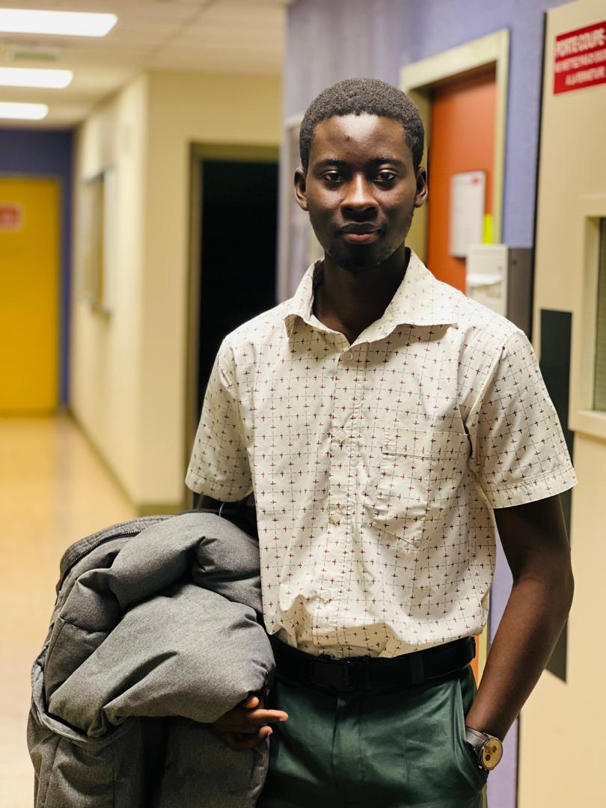
Présentation devant le jury de mon memoire de master 1 sur la fiscalité verte et l'innovation, validé à l'issue de la soutenance.
Etudes économiques et entréprises innovantes, un duo gagnant !
les études économiques et économetriques permettent de comprendre les incitations à innover des entreprises, la place de la politique de la concurrence, du droit de la propriété intellectuelle, de la réglementation environnementale, du commerce international et les modalités du soutien public à l'innovation. Elles permettent de relier aussi la qualité des institutions à l'efficacité des politiques publiques et à la croissance. Elles fournissent également des données utiles en termes de strategie marketing et commerciale
L'argent public est precieux. Toutes politique publiques doit reposer sur une efficacité prouvée. Mon travail consiste à isoler l'effet causal, puis à le rendre lisible pour tous.
Formé à la statistique et à l'informatique appliquées à l'économie à l'Université Joseph Ki-Zerbo de Ouagadougou, je suis en Master 2 d'économie appliquée, parcours Innovation et politiques publiques, à l'Université Bourgogne Europe. Ma formation et mes travaux portent sur l'innovation, la croissance et les politiques publiques.
J'ai aussi une expérience de terrain en administration publique, comme stagiaire statisticien-économiste dans une direction régionale de l'économie et de la planification.
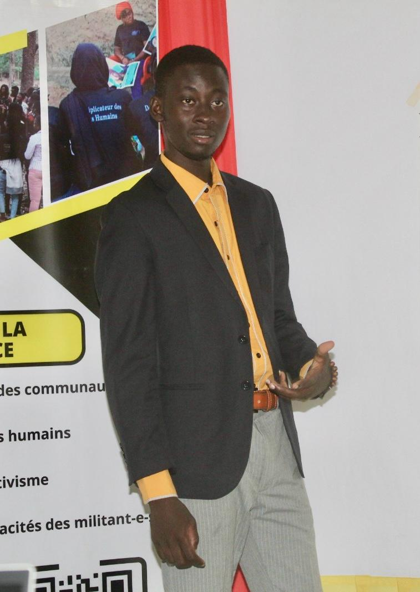
Séries temporelles, données de panel et inférence causale, de la stratégie d'identification aux tests de robustesse.
Conception d'enquêtes, Analyse et Visualisation de données, modélisation statistique,.
Suivi et évaluation des politiques publiques, participation à la conception de politiques industrielle et politiques d'innovation, et de politiques publiques en général.
Efficacité comparée de la R&D publique et des instruments fiscaux et réglementaires sur la productivité et les brevets. Recherche de non-linéarités et volet dédié à l'innovation verte, en combinant estimateurs de panel classiques et méthodes quasi-expérimentales récentes.

Comment la réglementation et les taxes environnementales influencent l'innovation à travers les relations contractuelles entre dirigeants et actionnaires. Une relecture de l'hypothèse de Porter, avec des recommandations pour les stratégies de croissance verte. Projet soutenu le 16 décembre 2025 à Dijon et validé par le jury.
Lire le mémoire (PDF) →
Modèle ARDL estimé sur les séries de la Banque mondiale pour mesurer les relations de court et de long terme entre politique budgétaire et PIB par habitant.
Lire le rapport de stage (PDF) →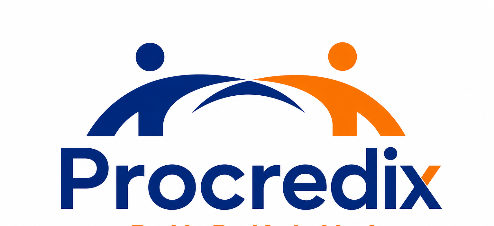
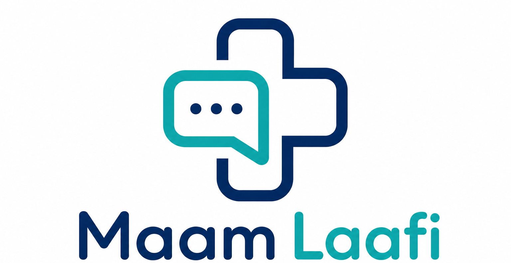
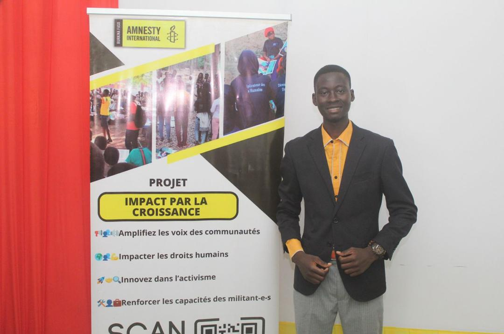
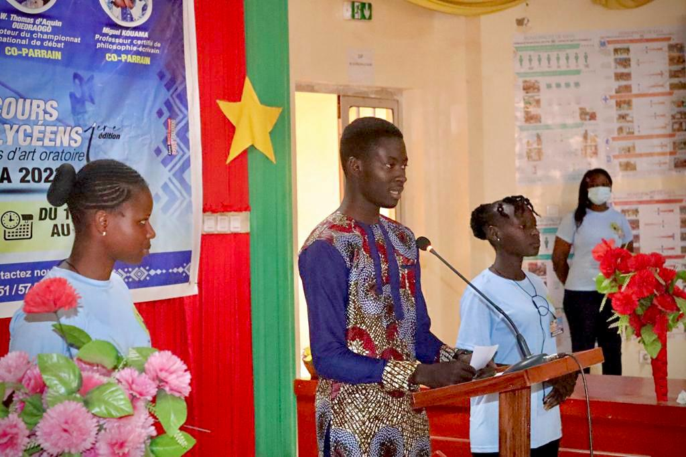
J’ai participé à des programmes de bénévolat communautaire avec Amnesty International Burkina Faso, axés sur la sensibilisation Des personnes sur les droits de l’homme. L’objectif était d’aider les gens et de promouvoir les droits humains chez les jeunes.
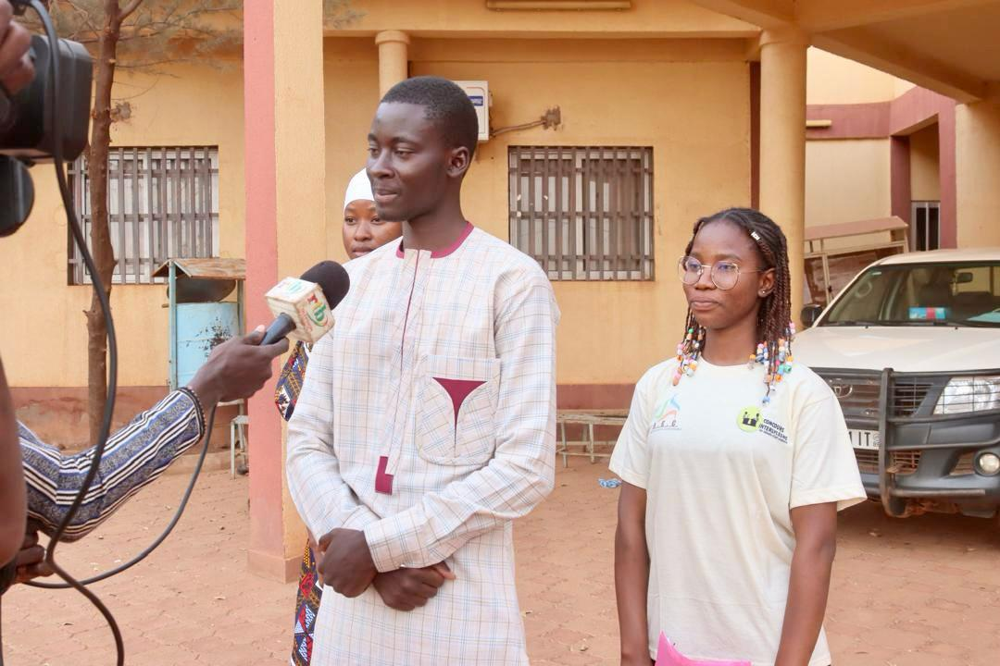
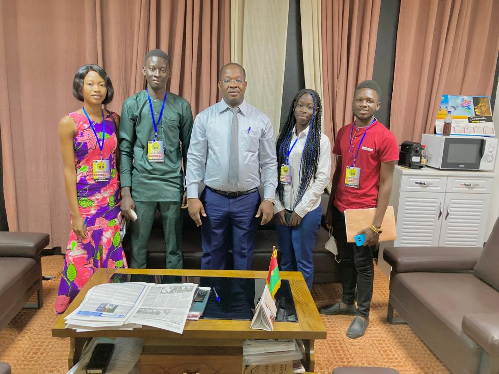
« L'engagement citoyen est la meilleure façon de se former tout en étant utile à sa société, et Le milieu associatif en est une manifestation concrète !»
J’ai toujours été intéressé par des actions dont l’impact dépasse ma personne, et je l’ai démontré en m’impliquant dans plusieurs associations, avant d’en cofonder une avec d’autres jeunes. Au sein de l’AEC, nous avons œuvré pour l’entrepreneuriat, la finance verte et le bien Communication.
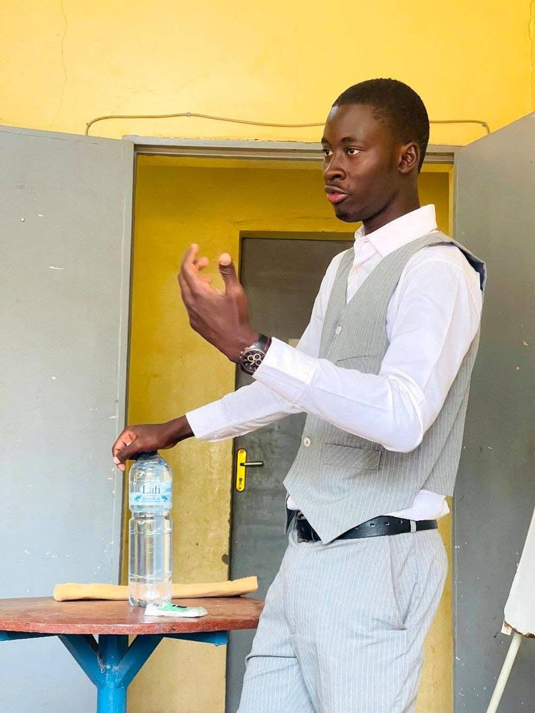
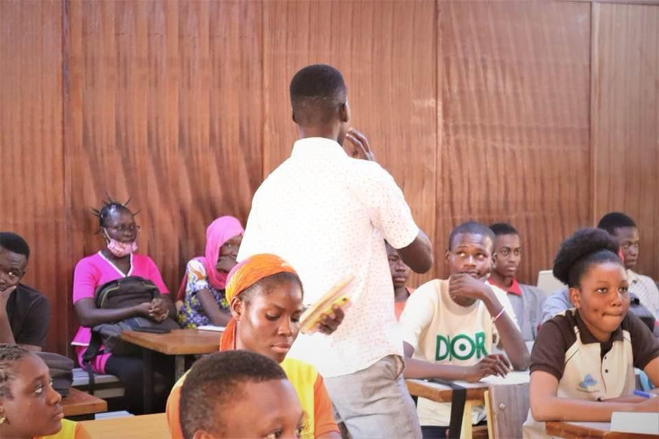
Passionné par l’art oratoire, je pratique cette discipline depuis le lycée. De débatteur passionné à coach dans l’art du débat et du pitching, en organisant un concours de débat et en offrant des services en tant que maître de cérémonie, l’art de La prise de parole a été ma deuxième activité principale pendant mes études de premier cycle. Je suis toujours heureux de m'y preter !
Mieux comprendre les choix des clients, tirer parti des capacités d'innovation.
Contribuer à la recherche et à l'enseignement en économie de l'innovation et des politiques publiques.
Renforcer vos missions tant sur la partie quantitative que sur le conseil.
Appuyer vos programmes.
Concevoir et évaluer des politiques publiques fondées sur les preuves.
Écrivez-moi via le formulaire ou directement. Je réponds en général sous 48 heures.
Mémoire de Master 1 sur la fiscalité verte et l'innovation ; mémoire de Master 2 sur les politiques d'innovation dans l'OCDE.
FormationProgramme de formation à la recherche multidisciplinaire.
FormationApprofondissement en programmation statistique et en méthodes d'évaluation causale.
CertificationRecherche quantitative, suivi de projets et analyse de données pour l'administration régionale.
ExpérienceMémoire sur la sensibilité de la croissance aux politiques budgétaires.
FormationFormation aux méthodes de suivi-évaluation des interventions humanitaires.
Certification